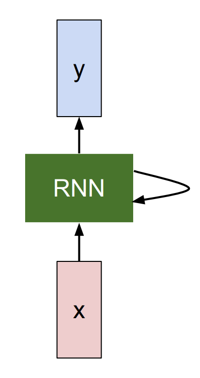
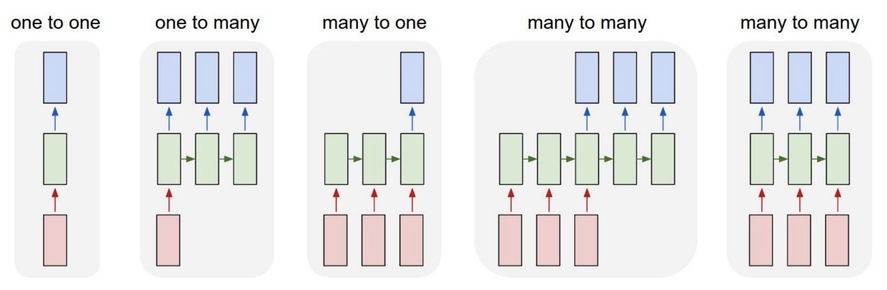
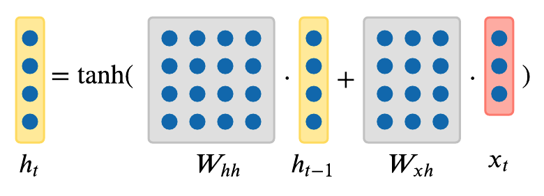
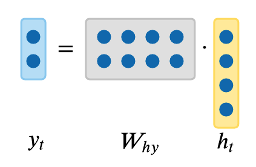
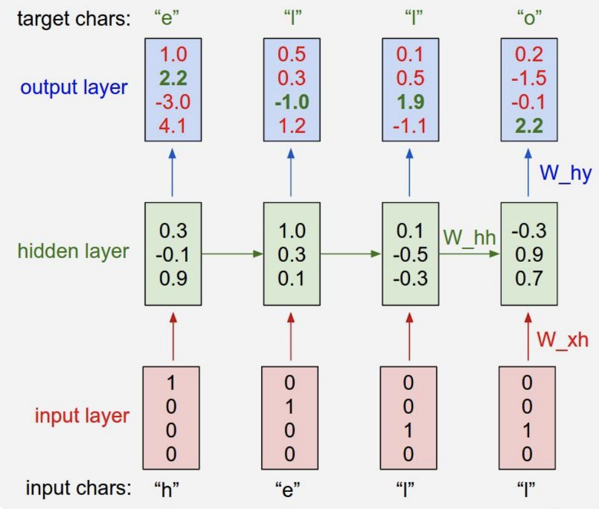
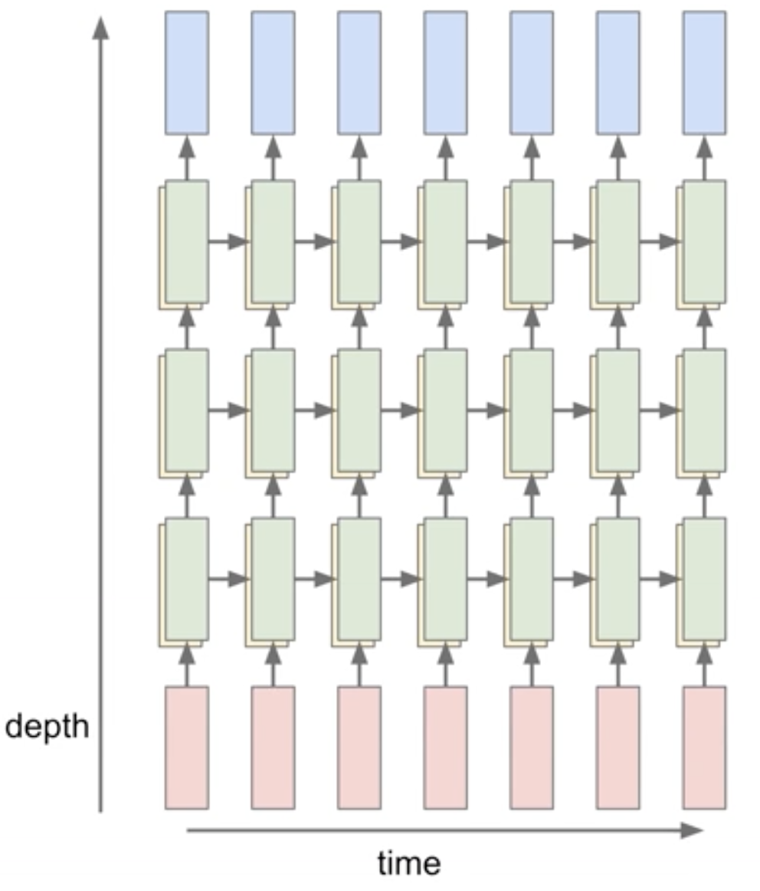
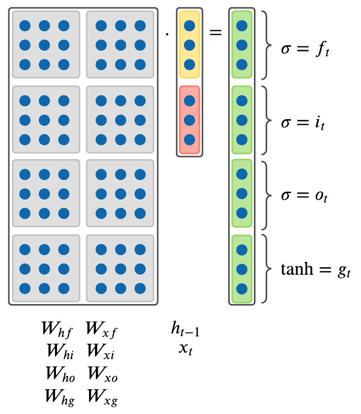
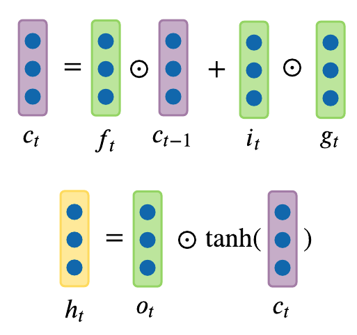
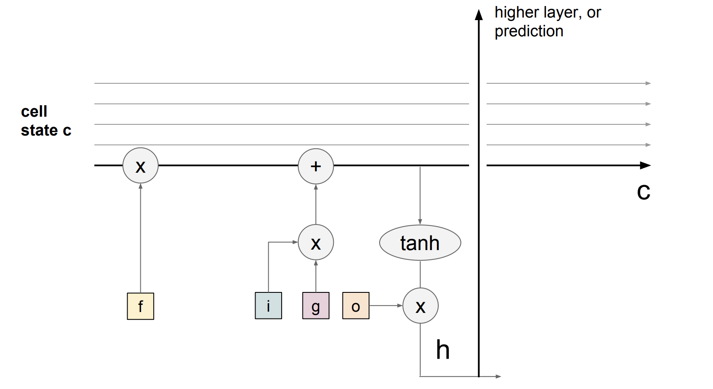

Figure 2. Simplified RNN box (Left) and Unrolled RNN (Right).
Table of Contents:
In this lecture note, we’re going to be talking about the Recurrent Neural Networks (RNNs). One great thing about the RNNs is that they offer a lot of flexibility on how we wire up the neural network architecture. Normally when we’re working with neural networks (Figure 1), we are given a fixed sized input vector (red), then we process it with some hidden layers (green), and we produce a fixed sized output vector (blue) as depicted in the leftmost model (“Vanilla” Neural Networks) in Figure 1. While “Vanilla” Neural Networks receive a single input and produce one label for that image, there are tasks where the model produce a sequence of outputs as shown in the one-to-many model in Figure 1. Recurrent Neural Networks allow us to operate over sequences of input, output, or both at the same time. * An example of one-to-many model is image captioning where we are given a fixed sized image and produce a sequence of words that describe the content of that image through RNN (second model in Figure 1). * An example of many-to-one task is action prediction where we look at a sequence of video frames instead of a single image and produce a label of what action was happening in the video as shown in the third model in Figure 1. Another example of many-to-one task is sentiment classification in NLP where we are given a sequence of words of a sentence and then classify what sentiment (e.g. positive or negative) that sentence is. * An example of many-to-many task is video-captioning where the input is a sequence of video frames and the output is caption that describes what was in the video as shown in the fourth model in Figure 1. Another example of many-to-many task is machine translation in NLP, where we can have an RNN that takes a sequence of words of a sentence in English, and then this RNN is asked to produce a sequence of words of a sentence in French. * There is a also a variation of many-to-many task as shown in the last model in Figure 1, where the model generates an output at every timestep. An example of this many-to-many task is video classification on a frame level where the model classifies every single frame of video with some number of classes. We should note that we don’t want this prediction to only be a function of the current timestep (current frame of the video), but also all the timesteps (frames) that have come before this video.
In general, RNNs allow us to wire up an architecture, where the prediction at every single timestep is a function of all the timesteps that have come before.

The existing convnets are insufficient to deal with tasks that have inputs and outputs with variable sequence lengths. In the example of video captioning, inputs have variable number of frames (e.g. 10-minute and 10-hour long video) and outputs are captions of variable length. Convnets can only take in inputs with a fixed size of width and height and cannot generalize over inputs with different sizes. In order to tackle this problem, we introduce Recurrent Neural Networks (RNNs).
RNN is basically a blackbox (Left of Figure 2), where it has an “internal state” that is updated as a sequence is processed. At every single timestep, we feed in an input vector into RNN where it modifies that state as a function of what it receives. When we tune RNN weights, RNN will show different behaviors in terms of how its state evolves as it receives these inputs. We are also interested in producing an output based on the RNN state, so we can produce these output vectors on top of the RNN (as depicted in Figure 2).
If we unroll an RNN model (Right of Figure 2), then there are inputs (e.g. video frame) at different timesteps shown as \[x_1, x_2, x_3\] … \[x_t\]. RNN at each timestep takes in two inputs – an input frame (\[x_i\]) and previous representation of what it seems so far (i.e. history) – to generate an output \[y_i\] and update its history, which will get forward propagated over time. All the RNN blocks in Figure 2 (Right) are the same block that share the same parameter, but have different inputs and history at each timestep.

More precisely, RNN can be represented as a recurrence formula of some function \[f_W\] with parameters \[W\]:
\[ h_t = f_W(h_{t-1}, x_t) \]
where at every timestep it receives some previous state as a vector \[h_{t-1}\] of previous iteration timestep \[t-1\] and current input vector \[x_t\] to produce the current state as a vector \[h_t\]. A fixed function \[f_W\] with weights \[W\] is applied at every single timestep and that allows us to use the Recurrent Neural Network on sequences without having to commit to the size of the sequence because we apply the exact same function at every single timestep, no matter how long the input or output sequences are.
In the most simplest form of RNN, which we call a Vanilla RNN, the network is just a single hidden state \[h\] where we use a recurrence formula that basically tells us how we should update our hidden state \[h\] as a function of previous hidden state \[h_{t-1}\] and the current input \[x_t\]. In particular, we’re going to have weight matrices \[W_{hh}\] and \[W_{xh}\], where they will project both the hidden state \[h_{t-1}\] from the previous timestep and the current input \[x_t\], and then those are going to be summed and squished with \[tanh\] function to update the hidden state \[h_t\] at timestep \[t\]. This recurrence is telling us how \[h\] will change as a function of its history and also the current input at this timestep:
\[ h_t = tanh(W_{hh}h_{t-1} + W_{xh}x_t) \]

We can base predictions on top of \[h_t\] by using just another matrix projection on top of the hidden state. This is the simplest complete case in which you can wire up a neural network:
\[ y_t = W_{hy}h_t \]

So far we have showed RNN in terms of abstract vectors \[x, h, y\], however we can endow these vectors with semantics in the following section.
One of the simplest ways in which we can use an RNN is in the case of a character-level language model since it’s intuitive to understand. The way this RNN will work is we will feed a sequence of characters into the RNN and at every single timestep, we will ask the RNN to predict the next character in the sequence. The prediction of RNN will be in the form of score distribution of the characters in the vocabulary for what RNN thinks should come next in the sequence that it has seen so far.
So suppose, in a very simple example (Figure 3), we have the training sequence of just one string \[\text{"hello"}\], and we have a vocabulary \[V \in \{\text{"h"}, \text{"e"}, \text{"l"}, \text{"o"}\}\] of 4 characters in the entire dataset. We are going to try to get an RNN to learn to predict the next character in the sequence on this training data.

As shown in Figure 3, we’ll feed in one character at a time into an RNN, first \[\text{"h"}\], then \[\text{"e"}\], then \[\text{"l"}\], and finally \[\text{"l"}\]. All characters are encoded in the representation of what’s called a one-hot vector, where only one unique bit of the vector is turned on for each unique character in the vocabulary. For example:
\[ \begin{bmatrix}1 \\ 0 \\ 0 \\ 0 \end{bmatrix} = \text{"h"}\ \ \begin{bmatrix}0 \\ 1 \\ 0 \\ 0 \end{bmatrix} = \text{"e"}\ \ \begin{bmatrix}0 \\ 0 \\ 1 \\ 0 \end{bmatrix} = \text{"l"}\ \ \begin{bmatrix}0 \\ 0 \\ 0 \\ 1 \end{bmatrix} = \text{"o"} \]
Then we’re going to use the recurrence formula from the previous section at every single timestep. Suppose we start off with \[h\] as a vector of size 3 with all zeros. By using this fixed recurrence formula, we’re going to end up with a 3-dimensional representation of the next hidden state \[h\] that basically at any point in time summarizes all the characters that have come until then:
\[ \begin{aligned} \begin{bmatrix}0.3 \\ -0.1 \\ 0.9 \end{bmatrix} &= f_W(W_{hh}\begin{bmatrix}0 \\ 0 \\ 0 \end{bmatrix} + W_{xh}\begin{bmatrix}1 \\ 0 \\ 0 \\ 0 \end{bmatrix}) \ \ \ \ &(1) \\ \begin{bmatrix}1.0 \\ 0.3 \\ 0.1 \end{bmatrix} &= f_W(W_{hh}\begin{bmatrix}0.3 \\ -0.1 \\ 0.9 \end{bmatrix} + W_{xh}\begin{bmatrix}0 \\ 1 \\ 0 \\ 0 \end{bmatrix}) \ \ \ \ &(2) \\ \begin{bmatrix}0.1 \\ -0.5 \\ -0.3 \end{bmatrix} &= f_W(W_{hh}\begin{bmatrix}1.0 \\ 0.3 \\ 0.1 \end{bmatrix} + W_{xh}\begin{bmatrix}0 \\ 0 \\ 1 \\ 0 \end{bmatrix}) \ \ \ \ &(3) \\ \begin{bmatrix}-0.3 \\ 0.9 \\ 0.7 \end{bmatrix} &= f_W(W_{hh}\begin{bmatrix}0.1 \\ -0.5 \\ -0.3 \end{bmatrix} + W_{xh}\begin{bmatrix}0 \\ 0 \\ 1 \\ 0 \end{bmatrix}) \ \ \ \ &(4) \end{aligned} \]
As we apply this recurrence at every timestep, we’re going to predict what should be the next character in the sequence at every timestep. Since we have four characters in vocabulary \[V\], we’re going to predict 4-dimensional vector of logits at every single timestep.
As shown in Figure 3, in the very first timestep we fed in \[\text{"h"}\], and the RNN with its current setting of weights computed a vector of logits:
\[ \begin{bmatrix}1.0 \\ 2.2 \\ -3.0 \\ 4.1 \end{bmatrix} \rightarrow \begin{bmatrix}\text{"h"} \\ \text{"e"} \\ \text{"l"}\\ \text{"o"} \end{bmatrix} \]
where RNN thinks that the next character \[\text{"h"}\] is \[1.0\] likely to come next, \[\text{"e"}\] is \[2.2\] likely, \[\text{"e"}\] is \[-3.0\] likely, and \[\text{"o"}\] is \[4.1\] likely to come next. In this case, RNN incorrectly suggests that \[\text{"o"}\] should come next, as the score of \[4.1\] is the highest. However, of course, we know that in this training sequence \[\text{"e"}\] should follow \[\text{"h"}\], so in fact the score of \[2.2\] is the correct answer as it’s highlighted in green in Figure 3, and we want that to be high and all other scores to be low. At every single timestep we have a target for what next character should come in the sequence, therefore the error signal is backpropagated as a gradient of the loss function through the connections. As a loss function we could choose to have a softmax classifier, for example, so we just get all those losses flowing down from the top backwards to calculate the gradients on all the weight matrices to figure out how to shift the matrices so that the correct probabilities are coming out of the RNN. Similarly we can imagine how to scale up the training of the model over larger training dataset.
So far we have only shown RNNs with just one layer. However, we’re not limited to only a single layer architectures. One of the ways, RNNs are used today is in more complex manner. RNNs can be stacked together in multiple layers, which gives more depth, and empirically deeper architectures tend to work better (Figure 4).

For example, in Figure 4, there are three separate RNNs each with their own set of weights. Three RNNs are stacked on top of each other, so the input of the second RNN (second RNN layer in Figure 4) is the vector of the hidden state vector of the first RNN (first RNN layer in Figure 4). All stacked RNNs are trained jointly, and the diagram in Figure 4 represents one computational graph.
So far we have seen only a simple recurrence formula for the Vanilla RNN. In practice, we actually will rarely ever use Vanilla RNN formula. Instead, we will use what we call a Long-Short Term Memory (LSTM) RNN.
An RNN block takes in input \[x_t\] and previous hidden representation \[h_{t-1}\] and learn a transformation, which is then passed through tanh to produce the hidden representation \[h_{t}\] for the next time step and output \[y_{t}\] as shown in the equation below.
\[ h_t = tanh(W_{hh}h_{t-1} + W_{xh}x_t) \]
For the back propagation, Let’s examine how the output at the very last timestep affects the weights at the very first time step. The partial derivative of \[h_t\] with respect to \[h_{t-1}\] is written as: \[ \frac{\partial h_t}{\partial h_{t-1}} = tanh^{'}(W_{hh}h_{t-1} + W_{xh}x_t)W_{hh} \]
We update the weights \[W_{hh}\] by getting the derivative of the loss at the very last time step \[L_{t}\] with respect to \[W_{hh}\].
\[ \begin{aligned} \frac{\partial L_{t}}{\partial W_{hh}} = \frac{\partial L_{t}}{\partial h_{t}} \frac{\partial h_{t}}{\partial h_{t-1} } \dots \frac{\partial h_{1}}{\partial W_{hh}} \\ = \frac{\partial L_{t}}{\partial h_{t}}(\prod_{t=2}^{T} \frac{\partial h_{t}}{\partial h_{t-1}})\frac{\partial h_{1}}{\partial W_{hh}} \\ = \frac{\partial L_{t}}{\partial h_{t}}(\prod_{t=2}^{T} tanh^{'}(W_{hh}h_{t-1} + W_{xh}x_t)W_{hh}^{T-1})\frac{\partial h_{1}}{\partial W_{hh}} \\ \end{aligned} \]
Vanishing gradient: We see that \[tanh^{'}(W_{hh}h_{t-1} + W_{xh}x_t)\] will almost always be less than 1 because tanh is always between negative one and one. Thus, as \[t\] gets larger (i.e. longer timesteps), the gradient (\[\frac{\partial L_{t}}{\partial W} \]) will descrease in value and get close to zero. This will lead to vanishing gradient problem, where gradients at future time steps rarely impact gradients at the very first time step. This is problematic when we model long sequence of inputs because the updates will be extremely slow.
Removing non-linearity (tanh): If we remove
non-linearity (tanh) to solve the vanishing gradient problem, then we
will be left with
\[
\begin{aligned}
\frac{\partial L_{t}}{\partial W} = \frac{\partial L_{t}}{\partial
h_{t}}(\prod_{t=2}^{T} W_{hh}^{T-1})\frac{\partial h_{1}}{\partial W}
\end{aligned}
\]
In practice, we can treat the exploding gradient problem through gradient clipping, which is clipping large gradient values to a maximum threshold. However, since vanishing gradient problem still exists in cases where largest singular value of W_{hh} matrix is less than one, LSTM was designed to avoid this problem.
The following is the precise formulation for LSTM. On step \[t\], there is a hidden state \[h_t\] and a cell state \[c_t\]. Both \[h_t\] and \[c_t\] are vectors of size \[n\]. One distinction of LSTM from Vanilla RNN is that LSTM has this additional \[c_t\] cell state, and intuitively it can be thought of as \[c_t\] stores long-term information. LSTM can read, erase, and write information to and from this \[c_t\] cell. The way LSTM alters \[c_t\] cell is through three special gates: \[i, f, o\] which correspond to “input”, “forget”, and “output” gates. The values of these gates vary from closed (0) to open (1). All \[i, f, o\] gates are vectors of size \[n\].
At every timestep we have an input vector \[x_t\], previous hidden state \[h_{t-1}\], previous cell state \[c_{t-1}\], and LSTM computes the next hidden state \[h_t\], and next cell state \[c_t\] at timestep \[t\] as follows:
\[ \begin{aligned} f_t &= \sigma(W_{hf}h_{t_1} + W_{xf}x_t) \\ i_t &= \sigma(W_{hi}h_{t_1} + W_{xi}x_t) \\ o_t &= \sigma(W_{ho}h_{t_1} + W_{xo}x_t) \\ g_t &= \text{tanh}(W_{hg}h_{t_1} + W_{xg}x_t) \\ \end{aligned} \]

\[ \begin{aligned} c_t &= f_t \odot c_{t-1} + i_t \odot g_t \\ h_t &= o_t \odot \text{tanh}(c_t) \\ \end{aligned} \]

where \[\odot\] is an element-wise Hadamard product. \[g_t\] in the above formulas is an intermediary calculation cache that’s later used with \[o\] gate in the above formulas.
Since all \[f, i, o\] gate vector values range from 0 to 1, because they were squashed by sigmoid function \[\sigma\], when multiplied element-wise, we can see that:
The key idea of LSTM is the cell state, the horizontal line running through between recurrent timesteps. You can imagine the cell state to be some kind of highway of information passing through straight down the entire chain, with only some minor linear interactions. With the formulation above, it’s easy for information to just flow along this highway (Figure 5). Thus, even when there is a bunch of LSTMs stacked together, we can get an uninterrupted gradient flow where the gradients flow back through cell states instead of hidden states \[h\] without vanishing in every time step.
This greatly fixes the gradient vanishing/exploding problem we have outlined above. Figure 5 also shows that gradient contains a vector of activations of the “forget” gate. This allows better control of gradients values by using suitable parameter updates of the “forget” gate.

LSTM architecture makes it easier for the RNN to preserve information over many recurrent time steps. For example, if the forget gate is set to 1, and the input gate is set to 0, then the infomation of the cell state will always be preserved over many recurrent time steps. For a Vanilla RNN, in contrast, it’s much harder to preserve information in hidden states in recurrent time steps by just making use of a single weight matrix.
LSTMs do not guarantee that there is no vanishing/exploding gradient problems, but it does provide an easier way for the model to learn long-distance dependencies.